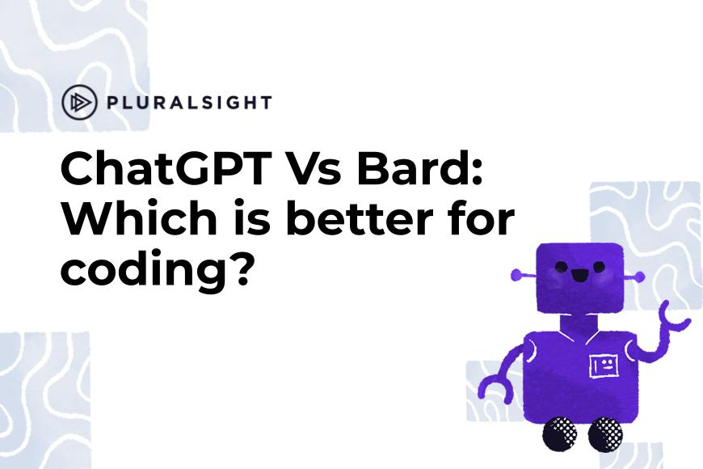

Binary Byte
Featured Posts

ChatGPT Vs Bard: Which is better for coding?
We test out which tool is best at code generation, problem solving, refactoring code and providing debugging assistance.
4 user story templates + how to write them with examples.
User story templates outline product features and functionality. Here are four user story templates with detailed.

Scrum vs. SAFe: Which Agile framework is right for your team?
Scrum vs. SAFe: Making the right choice for powerful organizational change. We’ll explain each framework, their pros.